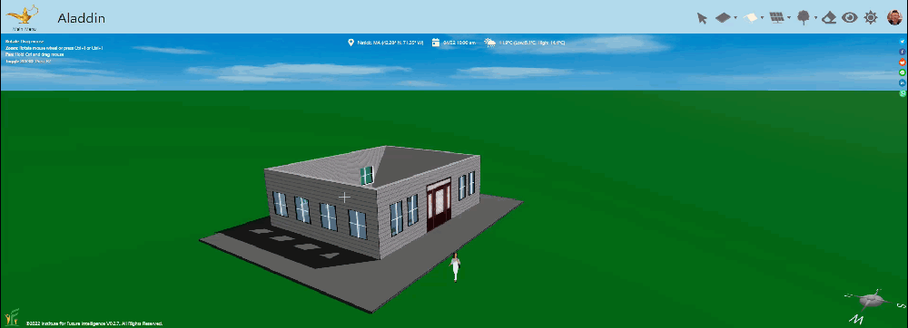
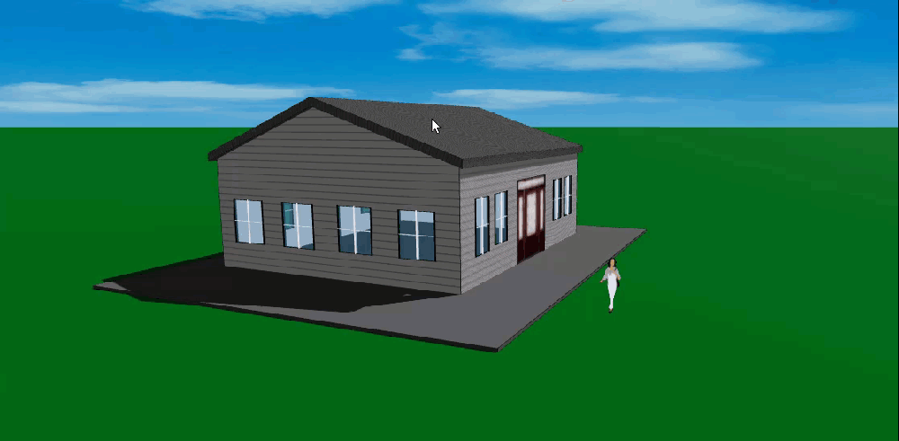
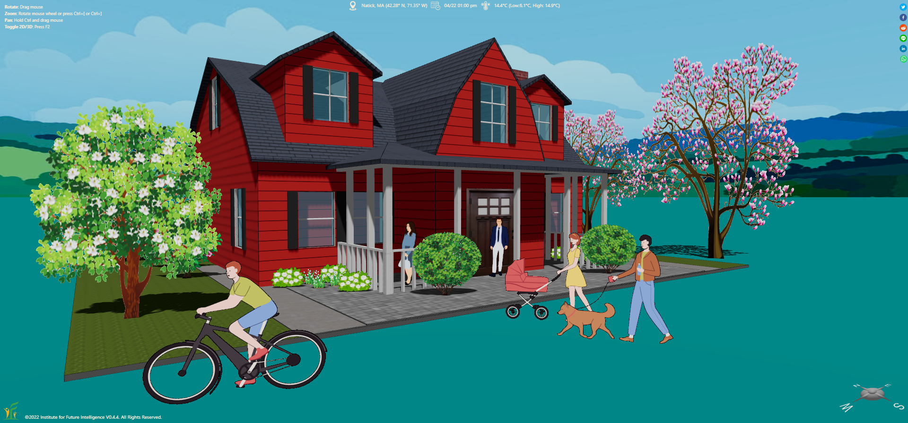

Common Types of Roof Shapes Supported in Aladdin
Nine parametric roof shapes you can add, adjust, and combine to recreate almost any residential roofline.
Perhaps the most distinguishable geometric feature of a house is its roof shape. There are a wide variety of shapes and configurations for roofs. The design choice often depends on the local climate and culture. For example, despite higher costs, high pitch roofs that allow snow to slip and rain to drain more easily are commonly seen in high-latitude areas. As of June, 2022, Aladdin supports nine different types of common roof shapes that are shown in the following embedded model. Note that a roof in Aladdin is parameterized, allowing it to be easily reshaped by altering a set of parameters.
These nine different types are: flat roof, shed roof, pyramid roof, open gable roof, box gable roof, hip roof, saltbox roof, gambrel roof, and mansard roof. Some of them are derived from more generic types by adjusting their parameters. For instance, a flat roof can be created by lowering the pinnacle of a pyrimid roof to the same level as the top of the walls.
Add a roof
After you have constructed the walls, you can select one of the Add Roof modes from the main menu. You must click on a wall to add a roof. The orientation of the roof depends on which wall you click, as shown in the following animation.

Adjust an existing roof
After you have added a roof, you can then adjust it to meet your design needs. For instance, the roof angle can be easily changed by dragging a control point up and down and the roof ridge can be shifted by dragging another control point back and forth, as shown in the following animation.

Create complex roofs
Complex roofs can be created by combining simple roofs. We will cover this in other articles.
